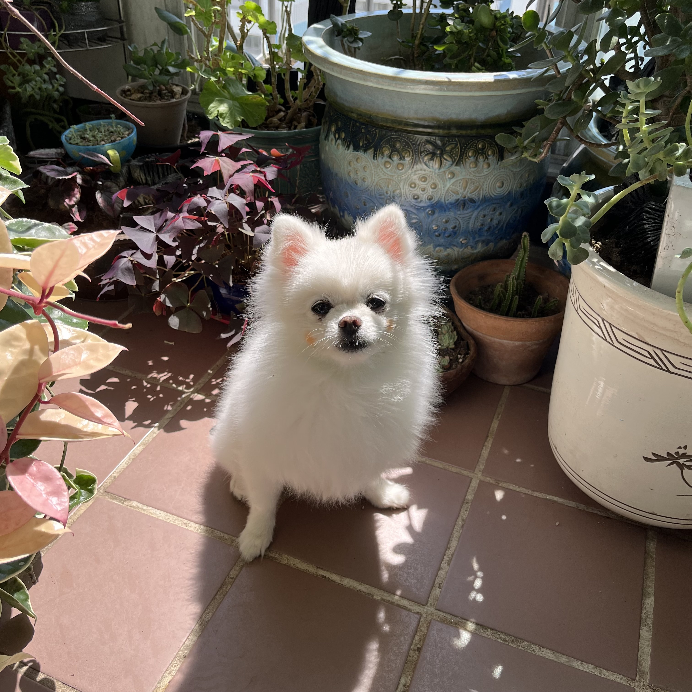

🧡우리집 아기사자 치즈를 소개합니다💛

치즈는 올해 9살이에요
[강아지 나이 환산표]
| 강아지 나이 | 사람 나이로 변환한 나이 | |||
|---|---|---|---|---|
| 나이 | 생애주기 | 소형견 | 중형견 | 대형견 |
| 2년 | 청년기 | 24살 | 24살 | 24살 |
| 3년 | 29살 | 30살 | 31살 | |
| 4년 | 34살 | 36살 | 38살 | |
| 5년 | 중장년기 | 39살 | 42살 | 45살 |
| 6년 | 44살 | 48살 | 52살 | |
| 7년 | 49살 | 54살 | 59살 | |
| 8년 | 54살 | 60살 | 66살 | |
| 9년 | 59살 | 66살 | 73살 | |
| 10년 | 64살 | 72살 | 80살 | |
치즈는 사람나이로 59살이 되었어요
[강아지 평균 수명표]
| 평균수명 | |
|---|---|
|
초소형견 토이푸들,말티즈 등 |
약 13 ~ 14년 |
|
소형견 시츄,포메라니안 등 |
약 14년 ~ 15년 |
|
중형견 웰시코기, 비글 등 |
약 14년 |
|
대형견 리트리버, 사모예드 등 |
약 12 ~ 13년 |
치즈는 포메라니안이에요 평균수명 14 ~ 15년을 살수 있어요
치즈를 건강하게 키우기 위해 산책을 자주 시켜 주기로 했어요😥

[소련이네 치즈를 산책시키는 사람 순위 그래프]
■
■
■
엄마
나
남동생